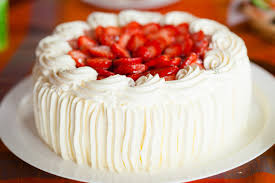
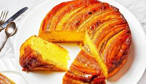
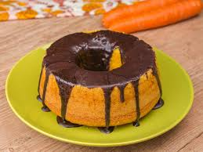

.png)
Os bolos são mais do que apenas sobremesas; eles são símbolos de celebração, amor e criatividade. Seja para uma festa de aniversário, um casamento, ou um simples lanche da tarde, um bolo sempre traz alegria e momentos inesquecíveis.
Os bolos são mais do que apenas sobremesas; eles são símbolos de celebração, amor e criatividade. Seja para uma festa de aniversário, um casamento, ou um simples lanche da tarde, um bolo sempre traz alegria e momentos inesquecíveis. Aqui no nosso site, você encontrará uma coleção incrível de receitas que vão desde os clássicos até as criações mais inovadoras.
|  |  |  |
| Bolo de Morango | Bolo de Banana | Bolo de Cenoura |
| Morangos frescos, massa fofa & chantilly | Bananas Maduras & calda de caramelo | Cenouras, ovos & cobertura de chocolate |
|
Assista ao vídeo ao lado e embarque em uma jornada deliciosa pelo mundo dos bolos! Bolos são mais do que apenas sobremesas — são símbolos de celebração, amor e criatividade. Seja um bolo simples para um lanche da tarde ou uma obra de arte decorativa para uma grande festa, cada receita conta uma história especial. |